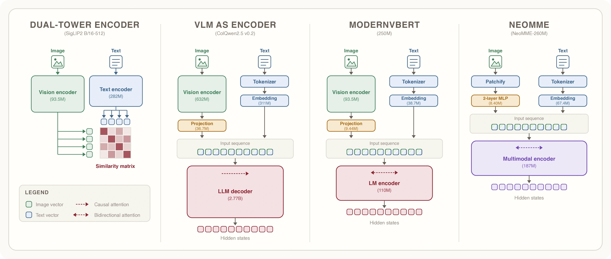
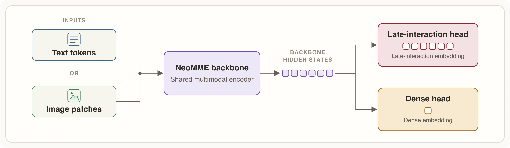

08 Hugging Face 게시일 2026.09.03
NeoMME, 문서 검색 속도와 저장량을 함께 줄였다

NeoMME는 텍스트와 이미지를 따로 처리하지 않고 하나의 트랜스포머가 함께 다루는 멀티모달 인코더다. H company는 이 모델을 문서 이미지 검색에 맞춰 조정해 속도와 저장량을 함께 낮췄다. 핵심은 생성형 시각언어모델 대신 검색에 맞는 인코더 구조를 처음부터 설계했다는 점이다.
핵심 브리핑
H company는 2억 6000만과 8억 규모의 NeoMME 모델군을 공개했다. 두 모델은 별도 비전 타워나 인과형 언어모델 없이, 하나의 양방향 트랜스포머가 텍스트 토큰과 이미지 패치를 함께 처리한다. 회사는 이 구조가 검색·분류·토큰 라벨링 같은 작업에서 불필요한 계산을 줄인다고 설명했다.
NeoMME는 Hugging Face Transformers에서 쓸 수 있다. 모든 체크포인트는 Apache 2.0 라이선스로 공개했다. 문서 검색용으로 미세조정한 NeoMME-Retriever는 한 번의 추론으로 dense와 late-interaction 임베딩을 함께 만든다.
- 모델 크기: 2억 6000만, 8억
- 문맥 길이: 1만 6384토큰
- 이미지 패치 크기: 32×32
- 텍스트 토크나이저 어휘 수: 13만 1000개
- 학습 토큰 수: 약 5240억
- 이 중 텍스트 전용 예시: 2900억 토큰
NeoMME-Retriever 260M은 ViDoRe v3에서 nDCG@10 0.523을 기록했다. 8억 미만 평가 모델 중 가장 높았다. 800M은 0.556을 기록했고, 비슷한 크기인 Vultron Retriever Flash 0.8B와의 차이는 0.009였다. 2048×2048 입력에서 260M 모델은 NVIDIA L40S GPU 기준 초당 약 51페이지를 인코딩했다.


스펙과 도입 조건
도입 조건은 비교적 명확하다. NeoMME는 Hugging Face Transformers에서 바로 쓸 수 있고, Apache 2.0 라이선스로 공개됐다. 상용 환경에서 법적 제약이 비교적 적은 편이다.
문서 검색 인프라 관점에서 강점은 저장량 절감이다. 연구진은 late-interaction 인덱스를 줄이기 위해 계층형 토큰 풀링과 비대칭 양자화를 결합했다. 평균 약 1.5메가바이트였던 페이지당 저장량을 39킬로바이트까지 줄였고, 더 공격적인 설정에서는 6킬로바이트까지 낮췄다. 이때 기준 성능의 95% 이상을 유지했다고 밝혔다.
하드웨어 조건도 일부 제시됐다. 처리 속도 수치는 NVIDIA L40S GPU, 2048×2048 입력 기준이다. 다른 GPU나 더 큰 해상도에서 같은 속도가 보장되는지는 발췌문만으로 알 수 없다.
| 항목 | 수치 | 조건·단서 |
|---|---|---|
| 문서 검색 성능 | nDCG@10 0.523 | NeoMME-Retriever-260M, ViDoRe v3 |
| 문서 검색 성능 | nDCG@10 0.556 | NeoMME-Retriever-800M, ViDoRe v3 |
| 처리 속도 | 초당 약 51페이지 | 260M, 2048×2048, NVIDIA L40S GPU |
| 평균 저장량 | 약 1.5MB/페이지 | ViDoRe v3 측정 평균 |
| 압축 후 저장량 | 39kB/페이지 | 풀링 10, int8 질의·문서, 기준 성능 99% 이상 유지 |
| 공격적 압축 | 6kB/페이지 | 풀링 8, int8 질의, binary 문서, 기준 성능 95% 이상 유지 |
업계의 움직임
아직 공개된 반응은 확인되지 않았다.
시사점과 체크포인트
금융 문서는 표, 차트, 서식, 글꼴 차이가 의미를 바꾸는 경우가 많다. NeoMME처럼 문서 페이지를 이미지로 그대로 검색하는 방식은 OCR 과정에서 빠지는 레이아웃 정보를 살릴 수 있다.
우리 회사가 검토한다면 검색 정확도보다 운영 구조를 먼저 봐야 한다.
- 지식관리팀: PDF를 텍스트로 풀지 않고 페이지 이미지로 색인할 가치가 있는지 검토
- 검색플랫폼팀: dense 검색 후 late-interaction 재정렬 구조를 붙일 수 있는지 확인
- 인프라팀: 페이지당 저장량 6킬로바이트와 39킬로바이트 설정의 비용 차이 계산
- 보안팀: 문서 이미지를 외부 모델에 보내지 않고 내부에서 임베딩할 수 있는 배포 방식 점검
성능 수치 일부는 자체 평가 결과다. 발췌문에는 MTEB 점수와 자체 평가가 섞여 있다고 적혀 있다. 도입 전에는 우리 문서 유형으로 재현 테스트를 해야 한다.
주요 용어
원문 정보
제목: NeoMME: an efficient Multimodal-native and Multilingual Encoder
게시일: 2026.09.03